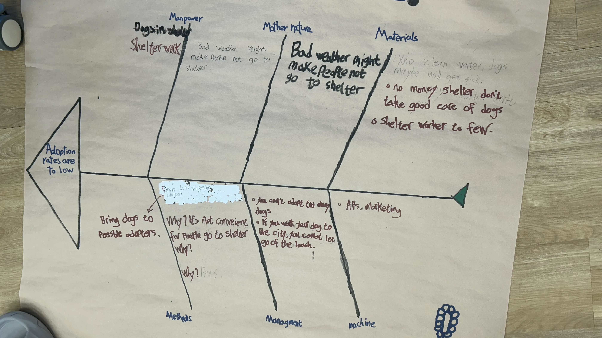

Alfie
Alfie
Research
Learning to do Research
This page shows how we used a fish bone and a 50-person survey to know that dog cafes and public transport are the best ways to make dog adoption go up. It also includes our practice video interviewing Da'an students!
Learning how to do Research
FishBone
Fish Bone

Why are adaption rates low ?
Because many people do not adopt shelter dogs.>Why do many people not adopt shelter dogs?
Because they do not know the dogs well enough.>Why do they not know the dogs well enough?
Because they do not have many chances to meet and interact with them.>Why do they not have many chances to meet and interact with them?
Because the shelter is not easy for everyone to visit often.>Why is this a problem?
Because people need a safe and convenient place to meet dogs before they feel ready to adopt.>Our smallest actionable point was to create safe and convenient ways for people to meet shelter dogs before adoption.
>This could include dog cafés, school events, or park events.